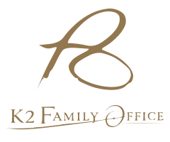

ASSETS / 資産運用
経営者の資産はなぜ自社株に集中するのか

多くの経営者にとって、会社はこれまでの人生をかけて育ててきた大切な資産です。
その結果、個人の資産の大部分が自社株に集中しているという状況は決して珍しくありません。
しかし、この状態には大きなリスクが潜んでいることも事実です。
質問： 自社株はそのまま保有し続けるべきでしょうか？
回答：
一概に「保有し続けるべき」とは言えません。
自社株は事業の成長に伴い大きな価値を生む可能性がある一方で、経営環境の変化や業界の構造変化によって、その価値が大きく変動するリスクもあります。重要なのは、事業の将来性、家族の状況、個人の人生設計を踏まえて、資産全体の中で適切なバランスを取ることです。

自社株に集中する主な理由
自社株に資産が集中する背景には、いくつかの共通した理由があります。
会社の成長と経営者ごとの事情
会社の成長とともに株式の価値が上昇してきたこと、会社への強い思い入れ、納税資金の確保としての自社株保有など、それぞれの経営者に固有の事情が存在します。
自社株集中がもたらす主なリスク
自社株は大きなリターンの源泉となる可能性がありますが、同時に以下のようなリスクも抱えています。
事業・相続・流動性の観点から確認する
- 会社の業績悪化による株価下落
- 業界の構造変化や競争環境の変化
- 経営者の健康問題や後継者不在による事業継続リスク
- 相続時の納税資金不足
- 資産の流動性の低さ
まとめ｜自社株だけでなく、資産全体を見渡す
KEY POINT
- 自社株への集中は、成功の証であると同時に大きなリスクを伴う
- 事業、家族、個人の人生設計を踏まえたバランスが重要
- 早い段階から資産の全体像を整理し、分散と流動性を確保する
質問： 自社株の保有を考えるとき、何から整理すればよいでしょうか？
回答：
まず、資産全体の中で自社株がどのような位置づけにあるかを整理します。事業の将来性、家族の状況、個人の人生設計を踏まえ、資産全体のバランスを考えることが出発点です。
自社株への集中は、事業を育ててきた結果であると同時に、資産全体のリスクを考えるきっかけでもあります。早い段階から資産の全体像を整理し、事業と家族、これからの人生を一緒に考えていくことが大切です。